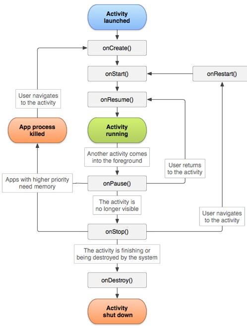

Introducción al análisis de malware en Android
Todo el curso, hasta ahora, ha girado en torno a Windows: ejecutables PE, el registro, procesos y DLLs. Este módulo final cambia de sistema operativo y cierra el plan de estudio con Android, la plataforma móvil más extendida del mundo y, por eso mismo, un objetivo constante para el malware. Muchas de las ideas ya vistas —análisis estático frente a dinámico, permisos como indicador de comportamiento sospechoso, componentes que el malware reutiliza con fines maliciosos— reaparecen aquí adaptadas a la arquitectura y al modelo de aplicaciones propios de Android.
1 Vectores de infección en Android
Antes de entrar en cómo está construido Android o cómo se analiza una app maliciosa, conviene situar por dónde llega el malware al dispositivo. Los principales vectores de infección en Android son:
- Distribución a través de la tienda de aplicaciones.
- Distribución mediante phishing.
- Distribución mediante un sitio web comprometido.
- Distribución mediante imágenes del sistema operativo.
- Código fuente comprometido.
- Explotación de software.
- Acceso físico.
2 Arquitectura de Android
Android está organizado en capas, cada una construida sobre la anterior. De abajo hacia arriba, los componentes principales de la arquitectura Android son:
Kernel de Linux
Es la base de la plataforma. Se encarga de acceder a los recursos del dispositivo y proporcionar funcionalidades a bajo nivel, como la generación de procesos y la administración de memoria.
Capa de abstracción de hardware (HAL)
Proporciona interfaces de software que exponen las capacidades de hardware del dispositivo a las capas superiores, mediante una serie de bibliotecas específicas para cada componente de hardware.
Tiempo de ejecución de Android (ART)
El Android Runtime traduce el código en formato DEX de la app a código máquina nativo del procesador. Sustituyó a Dalvik (versiones anteriores a Android 5.0): Dalvik compilaba en tiempo de ejecución (JIT); ART compila de forma anticipada (AOT).
Bibliotecas C/C++ nativas
Escritas en C y C++. Componentes clave como ART y HAL las utilizan, y también se exponen a los desarrolladores a través de la API de Java para mejorar el rendimiento en operaciones concretas, como el tratamiento de gráficos.
Framework de la API de Java
Todas las funcionalidades de Android están disponibles para las apps a través de una API escrita en Java. Tanto las apps del sistema como las de terceros acceden a las mismas funciones de esta API.
Apps del sistema
La capa más alta. Android incluye apps que proporcionan servicios fundamentales (correo, SMS, calendario, navegador, contactos), utilizables directamente por el usuario y también accesibles para otras apps.
Cada versión de Android recibe un número de versión y, además, un nivel de API: un número entero que identifica de forma única la revisión de la API de framework disponible, e incluye el conjunto de paquetes y clases, los atributos XML para manifiestos y recursos, los intents y los permisos que las aplicaciones pueden solicitar en esa revisión.
| Nombre | Versión | API |
|---|---|---|
| Cupcake | 1.5 | 3 |
| Gingerbread | 2.3 – 2.3.7 | 9 – 10 |
| Ice Cream Sandwich | 4.0 – 4.0.4 | 14 – 15 |
| KitKat | 4.4 – 4.4.4 | 19 – 20 |
| Lollipop | 5.0 – 5.1.1 | 21 – 22 |
| Marshmallow | 6.0 – 6.0.1 | 23 |
| Nougat | 7.0 – 7.1.2 | 24 – 25 |
| Oreo | 8.0 – 8.1 | 26 – 27 |
| Pie | 9.0 | 28 |
| Android 10 – 14 | 10.0 – 14.0 | 29 – 34 |
Tabla simplificada; Android numera sus versiones desde la 1.0 (API 1, 2008) hasta la actualidad, y a partir de Android 10 abandonó los nombres de postre en favor del número de versión.
3 Componentes de una aplicación Android
Una aplicación Android se construye combinando un conjunto reducido de tipos de componentes. Cada uno de ellos tiene un propósito muy concreto en una app legítima, y ese mismo propósito es precisamente lo que el malware busca explotar.
Actividades (Activities)
Componente clave: la forma en que se inician y se crean las actividades es parte fundamental del modelo de aplicación. Generalmente, una actividad implementa una pantalla con una interfaz de usuario específica; al iniciar la app se invoca a la actividad principal, y unas actividades pueden invocar a otras, propias o externas. El malware puede mostrar una actividad maliciosa cuya apariencia imite a la de un servicio legítimo (por ejemplo, una pantalla de inicio de sesión de una red social).
Servicios (Services)
Un servicio puede realizar operaciones de larga ejecución en segundo plano, sin interfaz de usuario. Puede ser iniciado por otros componentes y seguir ejecutándose aunque el usuario cambie de aplicación; un componente puede además enlazarse con él para comunicarse entre procesos (IPC). Son un componente muy interesante para el malware, ya que permiten mantener en segundo plano la funcionalidad maliciosa.
Transmisiones (Broadcast receivers)
Android permite enviar o recibir mensajes según el patrón publicación/suscripción: el sistema (o una app) emite un aviso cuando ocurre un evento —batería baja, un SMS recibido, una llamada— y las apps suscritas lo reciben mediante un broadcast receiver. El malware puede usar las transmisiones para interceptar, por ejemplo, un SMS con una contraseña de un solo uso.
Proveedores de contenido (Content providers)
Por defecto, una app Android no puede acceder a los datos de otra. Un proveedor de contenido sortea esa limitación y permite compartir datos entre aplicaciones; Android incluye proveedores predeterminados (ajustes, registro de llamadas, contactos) y las apps pueden crear los suyos propios. El malware puede utilizar los proveedores de contenido de otras apps para obtener sus datos.
Intents
Un Intent es un objeto de mensajería que solicita una acción a otro componente. Sus tres usos principales son iniciar una actividad, iniciar un servicio o transmitir una emisión. El malware puede usar intents para iniciar actividades o servicios maliciosos.
4 Ciclo de vida de una actividad
Cuando un usuario navega por una app, sus actividades van pasando por distintos estados, y la API de Android ofrece una serie de métodos que se invocan automáticamente en cada transición: onCreate(), onStart(), onResume(), onPause(), onStop(), onRestart() y onDestroy().

5 Permisos de una aplicación
Los permisos ayudan a proteger la privacidad del usuario, ya que limitan el acceso de una app a datos restringidos (como el estado del sistema o la información de contacto) y a acciones restringidas (como conectarse a un dispositivo vinculado o grabar audio). Este componente es muy relevante en el análisis de malware: una aplicación que solicita muchos tipos de permisos puede ser indicativa de funcionalidad sospechosa, sobre todo cuando esos permisos no guardan relación evidente con lo que la app dice hacer (una app de linterna que pide READ_SMS y RECORD_AUDIO, por ejemplo).
| Permisos peligrosos (selección) | ||
|---|---|---|
| ACCEPT_HANDOVER | CAMERA | RECEIVE_MMS |
| ACCESS_BACKGROUND_LOCATION | GET_ACCOUNTS | RECEIVE_SMS |
| ACCESS_COARSE_LOCATION | PROCESS_OUTGOING_CALLS | RECEIVE_WAP_PUSH |
| ACCESS_FINE_LOCATION | READ_CALENDAR | RECORD_AUDIO |
| ACCESS_MEDIA_LOCATION | READ_CALL_LOG | SEND_SMS |
| ACTIVITY_RECOGNITION | READ_CONTACTS | USE_SIP |
| ADD_VOICEMAIL | READ_EXTERNAL_STORAGE | WRITE_CALENDAR |
| ANSWER_PHONE_CALLS | READ_PHONE_NUMBERS | WRITE_CALL_LOG |
| BODY_SENSORS | READ_PHONE_STATE | WRITE_CONTACTS |
| CALL_PHONE | READ_SMS | WRITE_EXTERNAL_STORAGE |
Lista de referencia (no exhaustiva). Documentación completa: developer.android.com/reference/android/Manifest.permission.
6 El formato APK
El Android Package (APK) es el paquete de aplicación para Android: una variante del formato JAR de Java, básicamente un archivo ZIP comprimido que puede abrirse con herramientas como WinRAR o 7-Zip. Su contenido más relevante para el análisis es:
META-INF/
Directorio con la información del certificado de la aplicación.
lib/
Directorio que contiene el código compilado en C/C++ (las bibliotecas nativas del módulo 2 de este bloque).
res/
Directorio con los recursos no compilados en archivos resource.arsc.
assets/
Directorio con recursos adicionales de la aplicación.
AndroidManifest.xml
Describe la información esencial de la app: nombre del paquete, componentes que incluye, permisos que necesita, funciones de hardware requeridas y versión mínima de Android —el primer fichero que revisa cualquier análisis estático.
Más información: developer.android.com/guide/topics/manifest/manifest-intro.
7 Análisis estático de apps Android
Igual que en Windows (módulo 10), el análisis estático consiste en analizar la aplicación sin ejecutarla. En Android admite tres variantes que suelen combinarse: el desempaquetado (unpacking) del APK, la decompilación de su código a un lenguaje legible y el desensamblado a bytecode o a ensamblador nativo.
Elementos a analizar
- Código de la aplicación (conexiones, algoritmos criptográficos, contraseñas embebidas, API utilizada, etc.).
- Metadatos.
- Ficheros de configuración.
- Recursos.
Herramientas principales
| apktool | Desempaqueta y reempaqueta el APK (apktool d / apktool b). |
| Dex2jar | Convierte un .dex en un .jar, permitiendo decompilar sus .class a Java. |
| jd-gui | Decompilador de ficheros .jar de Java. |
| Bytecode Viewer / JADX | Decompiladores que aceptan directamente el formato APK. |
| Ghidra / IDA | Para analizar las librerías nativas (módulo 12 de este curso). |
| MobSF | Analiza ficheros de forma automática; también permite análisis dinámico. |
| Androguard | Framework para el análisis estático de apps Android, con automatización en Python. |
8 Análisis dinámico de apps Android
El análisis dinámico consiste en analizar la aplicación durante su ejecución y monitorizar su comportamiento —el mismo principio que en el módulo 11, ahora sobre un dispositivo o emulador Android en lugar de una máquina virtual Windows. La mayoría de las veces es necesario contar con permisos de superusuario (root) para poder analizar todos los elementos del sistema.
Qué se observa
- Monitorización de conexiones de red.
- Flujo de ejecución.
- Información que almacena la aplicación.
- Datos en memoria.
Herramientas principales
| JEB Decompiler for Android | Decompilador y depurador de apps Android. |
| Frida | Framework de instrumentación dinámica de código libre; monitoriza y depura aplicaciones. |
| Android Studio | Entorno de desarrollo integrado oficial para Android. |
| Jdb / jdwp | Depuradores de Java. |
| Wireshark | Analizador de protocolos de red (ya visto para el análisis dinámico en Windows). |
| Burp Proxy | Servidor proxy incluido en Burp Suite, para interceptar el tráfico HTTP/HTTPS de la app. |
9 Cómo encaja este módulo con el resto del curso
Este módulo cierra el plan de estudio trasladando a Android el mismo razonamiento aplicado durante todo el curso a Windows: identificar el vector de entrada, entender la plataforma sobre la que se ejecuta el código (su arquitectura, sus componentes, su modelo de permisos) y combinar análisis estático y dinámico para averiguar qué hace realmente una muestra. Los nombres de las herramientas cambian —apktool y JADX en lugar de un editor hexadecimal y Ghidra; Frida en lugar de x32dbg—, pero la lógica del analista es la misma: sospechar de lo que no encaja (unos permisos desproporcionados, una actividad que imita a otra app), y verificarlo examinando primero el código en reposo y después su comportamiento real en ejecución.